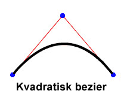
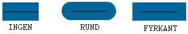

| Paket | flash.display |
| Klass | public final class Graphics |
| Arv | Graphics |
| Språkversion: | ActionScript 3.0 |
| Körningsmiljöversioner: | AIR 1.0, Flash Player 9, Flash Lite 4 |
graphics-egenskap som är ett Graphics-objekt. Detta är några av de hjälpfunktioner som avser att göra användningen enklare: drawRect(), drawRoundRect(), drawCircle() och drawEllipse().
Du kan inte skapa ett Graphics-objekt direkt från en ActionScript-kod. Om du anropar new Graphics() uppstår ett undantag.
Graphics-klassen är slutlig – den kan inte underklassas.
 Dölj ärvda publika egenskaper
Dölj ärvda publika egenskaper Visa ärvda publika egenskaper
Visa ärvda publika egenskaper| Metod | Definieras med | ||
|---|---|---|---|
beginBitmapFill(bitmap:BitmapData, matrix:Matrix = null, repeat:Boolean = true, smooth:Boolean = false):void
Fyller i en rityta med en bitmappsbild. | Graphics | ||
Anger en enkel enfärgsfyllning som efterföljande anrop till andra Graphics-metoder (till exempel lineTo() eller drawCircle()) använder vid ritning. | Graphics | ||
beginGradientFill(type:String, colors:Array, alphas:Array, ratios:Array, matrix:Matrix = null, spreadMethod:String = "pad", interpolationMethod:String = "rgb", focalPointRatio:Number = 0):void
Anger en övertoningsfyllning som används för efterföljande anrop till andra Graphics-metoder (till exempel lineTo() eller drawCircle()) för objektet. | Graphics | ||
Anger en skuggfyllning som används för efterföljande anrop till andra Graphics-metoder (till exempel lineTo() eller drawCircle()) för objektet. | Graphics | ||
Tar bort grafik som ritats i det här Graphics-objektet och återställer inställningar för fyllning och linjeformat. | Graphics | ||
Kopierar alla ritkommandon från det Graphics-objekt som är källan till det Graphics-objekt som anropas. | Graphics | ||
cubicCurveTo(controlX1:Number, controlY1:Number, controlX2:Number, controlY2:Number, anchorX:Number, anchorY:Number):void
Ritar upp en kubisk bezier-kurva från den aktuella ritpositionen till den angiva ankarpunkten. | Graphics | ||
Ritar en kvadratisk bezier-kurva med det nuvarande linjeformatet från den nuvarande ritpositionen till (anchorX, anchorY) med den kontrollpunkt som anges av (controlX, controlY). | Graphics | ||
Ritar en cirkel. | Graphics | ||
Ritar en ellips. | Graphics | ||
Skickar en serie IGraphicsData-instanser för teckning. | Graphics | ||
Skickar en serie ritkommandon. | Graphics | ||
Ritar en rektangel. | Graphics | ||
drawRoundRect(x:Number, y:Number, width:Number, height:Number, ellipseWidth:Number, ellipseHeight:Number = NaN):void
Ritar en rundad rektangel. | Graphics | ||
drawTriangles(vertices:Vector.<Number>, indices:Vector.<int> = null, uvtData:Vector.<Number> = null, culling:String = "none"):void
Återger en uppsättning trianglar, oftast för att förvränga bitmappar så att de ser tredimensionella ut. | Graphics | ||
Tillämpar en fyllning på de linjer och kurvor som lagts till sedan det senaste anropet till beginFill()-, beginGradientFill()-, eller beginBitmapFill()-metoden. | Graphics | ||
 |
Anger om det finns en egenskap angiven för ett objekt. | Object | |
|
Anger om en instans av klassen Object finns i prototypkedjan för objektet som anges som parameter. | Object | |
lineBitmapStyle(bitmap:BitmapData, matrix:Matrix = null, repeat:Boolean = true, smooth:Boolean = false):void
Anger en bitmapp som ska användas för linjen när linjer ritas. | Graphics | ||
lineGradientStyle(type:String, colors:Array, alphas:Array, ratios:Array, matrix:Matrix = null, spreadMethod:String = "pad", interpolationMethod:String = "rgb", focalPointRatio:Number = 0):void
Anger en övertoning som ska användas för linjen när linjer ritas. | Graphics | ||
Anger en skuggning som ska användas för linjen när linjer ritas. | Graphics | ||
lineStyle(thickness:Number = NaN, color:uint = 0, alpha:Number = 1.0, pixelHinting:Boolean = false, scaleMode:String = "normal", caps:String = null, joints:String = null, miterLimit:Number = 3):void
Anger ett linjeformat som används för efterföljande anrop till Graphics-metoder, t.ex. lineTo()- och drawCircle()-metoden. | Graphics | ||
Ritar en linje med det nuvarande linjeformatet från den nuvarande ritpositionen till (x, y). Den nuvarande ritpositionen ställs sedan in på (x, y). | Graphics | ||
Flyttar ritpositionen till (x, y). | Graphics | ||
|
Anger om den angivna egenskapen finns och är uppräkningsbar. | Object | |
Frågar ett Sprite- eller Shape-objekt (och eventuellt dess underordnade objekt) efter deras vektorgrafikinnehåll. | Graphics | ||
|
Anger tillgänglighet för en dynamisk egenskap för slingåtgärder. | Object | |
|
Returnerar det här objektets strängrepresentation, formaterad i enlighet med språkspecifika konventioner. | Object | |
|
Returnerar det angivna objektets strängbeteckning. | Object | |
|
Returnerar det angivna objektets primitiva värde. | Object | |
beginBitmapFill | () | metod |
public function beginBitmapFill(bitmap:BitmapData, matrix:Matrix = null, repeat:Boolean = true, smooth:Boolean = false):void| Språkversion: | ActionScript 3.0 |
| Körningsmiljöversioner: | AIR 1.0, Flash Player 9, Flash Lite 4 |
Fyller i en rityta med en bitmappsbild. Bitmappen kan upprepas så att området fylls ut. Fyllningen gäller tills du anropar beginFill()-, beginBitmapFill()-, beginGradientFill()- eller beginShaderFill()-metoden. Anrop av metoden clear() tar bort fyllningen.
Programmet återger fyllningen när tre eller fler punkter har ritats, eller när metoden endFill() anropas.
Parametrar
bitmap:BitmapData — En genomskinlig eller ogenomskinlig bitmappsbild som innehåller de bitar som ska visas.
| |
matrix:Matrix (default = null)
matrix = new flash.geom.Matrix();
matrix.rotate(Math.PI / 4);
| |
repeat:Boolean (default = true)true upprepas bilden i ett rutmönster. Om false upprepas inte bitmappsbilden. Bildens kanter används för eventuellt fyllningsområde utanför bitmappen.
Ta följande bitmappsbild som exempel (20 x 20 pixlar, schackrutigt mönster):
När
När
| |
smooth:Boolean (default = false)false återges förstorade bitmappsbilder med en närmast intilliggande-algoritm och ser taggiga ut. Om true återges förstorade bitmappsbilder med en bilinjär algoritm. Återgivning med den närmast intilliggande algoritmen går snabbare.
|


Relaterade API-element
Exempel ( Så här använder du exemplet )
image1.jpg) som roteras och upprepas för att fylla en rektangel.
- Bildfilen (
image1.jpg) läses in med objektenLoaderochURLRequest. Här finns filen i samma katalog som SWF-filen. SWF-filen måste kompileras med Lokal uppspelningssäkerhet inställd på Använd bara lokala filer. - När bilden har lästs in (
Eventär slutförd) anropas metodendrawImage(). MetodenioErrorHandler()skriver ut en kommentar om bilden inte lästs in korrekt. - I metoden
drawImage()skapas ettBitmapData-objekt och dess bredd och höjd ställs in på bilden (image1.jpg). Sedan ritas källbilden i BitmapData-objektet. Därefter ritas en rektangel i Sprite-objektetmySpriteoch BitmapData-objektet används för att fylla i den. Med hjälp av ettMatrix-objekt roterar metodenbeginBitmapFill()bilden 45 grader och börjar fylla i rektangeln med bilden tills den är klar.
package {
import flash.display.Sprite;
import flash.display.BitmapData;
import flash.display.Loader;
import flash.net.URLRequest;
import flash.events.Event;
import flash.events.IOErrorEvent;
import flash.geom.Matrix;
public class Graphics_beginBitmapFillExample extends Sprite {
private var url:String = "image1.jpg";
private var loader:Loader = new Loader();
public function Graphics_beginBitmapFillExample() {
var request:URLRequest = new URLRequest(url);
loader.load(request);
loader.contentLoaderInfo.addEventListener(Event.COMPLETE, drawImage);
loader.contentLoaderInfo.addEventListener(IOErrorEvent.IO_ERROR, ioErrorHandler);
}
private function drawImage(event:Event):void {
var mySprite:Sprite = new Sprite();
var myBitmap:BitmapData = new BitmapData(loader.width, loader.height, false);
myBitmap.draw(loader, new Matrix());
var matrix:Matrix = new Matrix();
matrix.rotate(Math.PI/4);
mySprite.graphics.beginBitmapFill(myBitmap, matrix, true);
mySprite.graphics.drawRect(100, 50, 200, 90);
mySprite.graphics.endFill();
addChild(mySprite);
}
private function ioErrorHandler(event:IOErrorEvent):void {
trace("Unable to load image: " + url);
}
}
}
beginFill | () | metod |
public function beginFill(color:uint, alpha:Number = 1.0):void| Språkversion: | ActionScript 3.0 |
| Körningsmiljöversioner: | AIR 1.0, Flash Player 9, Flash Lite 4 |
Anger en enkel enfärgsfyllning som efterföljande anrop till andra Graphics-metoder (till exempel lineTo() eller drawCircle()) använder vid ritning. Fyllningen gäller tills du anropar beginFill()-, beginBitmapFill()-, beginGradientFill()- eller beginShaderFill()-metoden. Anrop av metoden clear() tar bort fyllningen.
Programmet återger fyllningen när tre eller fler punkter har ritats, eller när metoden endFill() anropas.
Parametrar
color:uint — Fyllningsfärgen (0xRRGGBB).
| |
alpha:Number (default = 1.0) |
Relaterade API-element
Exempel
Så här använder du exemplet
Hur den här metoden används visas i exemplet i slutet av den här klassen.
beginGradientFill | () | metod |
public function beginGradientFill(type:String, colors:Array, alphas:Array, ratios:Array, matrix:Matrix = null, spreadMethod:String = "pad", interpolationMethod:String = "rgb", focalPointRatio:Number = 0):void| Språkversion: | ActionScript 3.0 |
| Körningsmiljöversioner: | AIR 1.0, Flash Player 9, Flash Lite 4 |
Anger en övertoningsfyllning som används för efterföljande anrop till andra Graphics-metoder (till exempel lineTo() eller drawCircle()) för objektet. Fyllningen gäller tills du anropar beginFill()-, beginBitmapFill()-, beginGradientFill()- eller beginShaderFill()-metoden. Anrop av metoden clear() tar bort fyllningen.
Programmet återger fyllningen när tre eller fler punkter har ritats, eller när metoden endFill() anropas.
Parametrar
type:String — Ett värde från klassen GradientType som anger vilken övertoningstyp som ska användas. GradientType.LINEAR eller GradientType.RADIAL.
| |||||||||
colors:Array — En array med RGB-hexadecimala färgvärden som används i övertoningen: röd är till exempel 0xFF0000, blå är 0x0000FF o.s.v. Du kan ange upp till 15 färger. För varje färg måste du ange ett motsvarande värde i parametrarna alphas och ratios.
| |||||||||
alphas:Array — En array med alfavärden för motsvarande färger i färgarrayen. Giltiga värden är 0–1. Om värdet är mindre än 0 är standardvärdet 0. Om värdet är större än 1 är standardvärdet 1.
| |||||||||
ratios:Array — En array med färgdistributionsförhållanden. Giltiga värden är 0–255. Värdet definierar hur stor del av bredden (i procent) där färgen är 100 %. Värdet 0 står för positionen till vänster i övertoningsrutan och värdet 255 står för positionen till höger i övertoningsrutan.
Obs!Detta värde står för positioner i övertoningsrutan och inte för den slutliga övertoningens koordinatmodell, som kan vara bredare eller smalare än övertoningsrutan. Ange ett värde för varje värde i parametern För en linjär övertoning med två färger, blå och grön, visar följande exempel placeringen av färgerna i övertoningen baserat på olika värden i arrayen
Värdena i arrayen måste öka sekventiellt, till exempel | |||||||||
matrix:Matrix (default = null)createGradientBox()-metod som gör att du enkelt kan ställa in matrisen för användning med metoden beginGradientFill()
| |||||||||
spreadMethod:String (default = "pad")SpreadMethod.PAD, SpreadMethod.REFLECT eller SpreadMethod.REPEAT.
Ta till exempel en enkel linjär övertoning mellan två färger:
import flash.geom.*
import flash.display.*
var fillType:String = GradientType.LINEAR;
var colors:Array = [0xFF0000, 0x0000FF];
var alphas:Array = [1, 1];
var ratios:Array = [0x00, 0xFF];
var matr:Matrix = new Matrix();
matr.createGradientBox(20, 20, 0, 0, 0);
var spreadMethod:String = SpreadMethod.PAD;
this.graphics.beginGradientFill(fillType, colors, alphas, ratios, matr, spreadMethod);
this.graphics.drawRect(0,0,100,100);
I det här exemplet används
Om du använder
Om du använder
| |||||||||
interpolationMethod:String (default = "rgb")InterpolationMethod.LINEAR_RGB eller InterpolationMethod.RGB
Ta till exempel en enkel linjär övertoning mellan två färger (med parametern
| |||||||||
focalPointRatio:Number (default = 0)focalPointRatio som är inställd på 0,75:
|


Utlöser
ArgumentError — Om type-parametern är ogiltig.
|
Relaterade API-element
beginShaderFill | () | metod |
public function beginShaderFill(shader:Shader, matrix:Matrix = null):void| Språkversion: | ActionScript 3.0 |
| Körningsmiljöversioner: | Flash Player 10, AIR 1.5 |
Anger en skuggfyllning som används för efterföljande anrop till andra Graphics-metoder (till exempel lineTo() eller drawCircle()) för objektet. Fyllningen gäller tills du anropar beginFill()-, beginBitmapFill()-, beginGradientFill()- eller beginShaderFill()-metoden. Anrop av metoden clear() tar bort fyllningen.
Programmet återger fyllningen när tre eller fler punkter har ritats, eller när metoden endFill() anropas.
Skuggningsfyllningar stöds inte vid GPU-återgivning (fyllda områden blir cyanfärgade).
Parametrar
shader:Shader — Den skuggning som ska användas för fyllningen. Den här Shader-instansen krävs inte för att ange bildinmatning. Om en bildinmatning är angiven i skuggningen måste dock inmatningen göras manuellt. Du anger inmatningen genom att ställa in input-egenskapen för motsvarande ShaderInput-egenskap i Shader.data-egenskapen.
När du skickar en Shader-instans som ett argument kopieras skuggningen internt. Fyllningsåtgärden använder den interna kopian och inte en referens till den ursprungliga skuggningen. Ändringar som görs i skuggningen, t.ex. ändring av parametervärde, inmatning eller bytekod, används inte i den kopierade skuggning som används i fyllningen. | |
matrix:Matrix (default = null)
matrix = new flash.geom.Matrix();
matrix.rotate(Math.PI / 4);
De koordinater som tas emot i skuggningen baseras på den matris som anges för |
Utlöser
ArgumentError — När skuggningens utdatatyp inte är kompatibel med den här åtgärden (skuggningen måste ange pixel3- eller pixel4-utdata).
| |
ArgumentError — När skuggningen anger en bildinmatning som inte är tillhandahållen.
| |
ArgumentError — När en ByteArray eller Vektor.<Number>-instans används som en inmatning och egenskaperna width och height är inte angivna för ShaderInput, eller också överensstämmer inte de angivna värdena med mängden data i inmatningsobjektet. Mer information finns under ShaderInput.input-egenskapen.
|
Relaterade API-element
clear | () | metod |
public function clear():void| Språkversion: | ActionScript 3.0 |
| Körningsmiljöversioner: | AIR 1.0, Flash Player 9, Flash Lite 4 |
Tar bort grafik som ritats i det här Graphics-objektet och återställer inställningar för fyllning och linjeformat.
copyFrom | () | metod |
public function copyFrom(sourceGraphics:Graphics):void| Språkversion: | ActionScript 3.0 |
| Körningsmiljöversioner: | Flash Player 10, AIR 1.5, Flash Lite 4 |
Kopierar alla ritkommandon från det Graphics-objekt som är källan till det Graphics-objekt som anropas.
Parametrar
sourceGraphics:Graphics — Det Graphics-objekt som ritkommandona ska kopieras från.
|
cubicCurveTo | () | metod |
public function cubicCurveTo(controlX1:Number, controlY1:Number, controlX2:Number, controlY2:Number, anchorX:Number, anchorY:Number):void| Språkversion: | ActionScript 3.0 |
| Körningsmiljöversioner: | Flash Player 11, AIR 3 |
Ritar upp en kubisk bezier-kurva från den aktuella ritpositionen till den angiva ankarpunkten. Kubiska Bezier-kurvor består av två ankarpunkter och två kontrollpunkt. Kurvan interpolerar de två ankarpunkterna och kurvas mot två kontrollpunkter.

De fyra punkter som du använder för att rita upp en kubisk bezier-kurva med metoden cubicCurveTo() är följande:
- Ritpositionen för den första ankarpunkten.
- Parametrarna
anchorXochanchorYanger den andra ankarpunkten. - Parametrarna
controlX1ochcontrolY1anger den första kontrollpunkten. - Parametrarna
controlX2ochcontrolY2anger den andra kontrollpunkten.
Om du anropar metoden cubicCurveTo() före moveTo(), kommer kurvan att utgå från positionen (0, 0).
Om metoden cubicCurveTo() lyckas, kommer den aktuella ritpositionen i Flash-miljön att sättas till (anchorX, anchorY). Om metoden cubicCurveTo() misslyckas förändras inte den aktuella ritpositionen.
Om filmklippet har innehåll som skapats med ritverktygen i Flash, kommer resultaten för anropen av cubicCurveTo()-metoden att ritas under innehållet.
Parametrar
controlX1:Number — Anger den vågräta positionen för den första kontrollpunkten i förhållande till registreringspunkten för det överordnade visningsobjektet.
| |
controlY1:Number — Anger den lodräta positionen för den första kontrollpunkten i förhållande till registreringspunkten för det överordnade visningsobjektet.
| |
controlX2:Number — Anger den vågräta positionen för den andra kontrollpunkten i förhållande till registreringspunkten för det överordnade visningsobjektet.
| |
controlY2:Number — Anger den lodräta positionen för den andra kontrollpunkten i förhållande till registreringspunkten för det överordnade visningsobjektet.
| |
anchorX:Number — Anger den vågräta positionen för kontrollpunkten i förhållande till registreringspunkten för det överordnade visningsobjektet.
| |
anchorY:Number — Anger den lodräta positionen för kontrollpunkten i förhållande till registreringspunkten för det överordnade visningsobjektet.
|
Exempel ( Så här använder du exemplet )
Rita fyra kurvor som tillsammans utgör en cirkel och fyll i den med blått.
Tänk på att den kubiska Bezierekvationen gör att detta inte blir en perfekt cirkel. Det bästa sättet att rita en cirkel är med metoden drawCircle() i klassen Graphics.
package {
import flash.display.Sprite;
import flash.display.Shape;
public class Graphics_cubicCurveToExample extends Sprite
{
public function Graphics_cubicCurveToExample():void
{
var rounderObject:Shape = new Shape();
rounderObject.graphics.beginFill(0x0000FF);
rounderObject.graphics.moveTo(250, 0);
rounderObject.graphics.cubicCurveTo(275, 0, 300, 25, 300, 50);
rounderObject.graphics.cubicCurveTo(300, 75, 275, 100, 250, 100);
rounderObject.graphics.cubicCurveTo(225, 100, 200, 75, 200, 50);
rounderObject.graphics.cubicCurveTo(200, 25, 225, 0, 250, 0);
rounderObject.graphics.endFill();
this.addChild(rounderObject);
}
}
}
curveTo | () | metod |
public function curveTo(controlX:Number, controlY:Number, anchorX:Number, anchorY:Number):void| Språkversion: | ActionScript 3.0 |
| Körningsmiljöversioner: | AIR 1.0, Flash Player 9, Flash Lite 4 |
Ritar en kvadratisk bezier-kurva med det nuvarande linjeformatet från den nuvarande ritpositionen till (anchorX, anchorY) med den kontrollpunkt som anges av(controlX, controlY). Den nuvarande ritpositionen ställs sedan in på (anchorX, anchorY). Om filmklippet du ritar i har innehåll som skapats med ritverktygen i Flash, ritas anrop till curveTo()-metoden under detta innehåll. Om du anropar curveTo()-metoden före anrop till moveTo()-metoden blir den aktuella standardritpositionen (0, 0). Om någon av parametrarna saknas fungerar inte metoden och den nuvarande ritpositionen ändras inte.
Den kurva som ritas är en kvadratisk Bezierkurva. Kvadratiska Bezier-kurvor består av två ankarpunkter och en kontrollpunkt. Kurvan interpolerar de två ankarpunkterna och kurvas mot kontrollpunkten.

Parametrar
controlX:Number — Ett siffervärde som anger den vågräta positionen för kontrollpunkten i förhållande till registreringspunkten för det överordnade visningsobjektet.
| |
controlY:Number — Ett siffervärde som anger den lodräta positionen för kontrollpunkten i förhållande till registreringspunkten för det överordnade visningsobjektet.
| |
anchorX:Number — Ett siffervärde som anger den vågräta positionen för nästa ankarpunkt i förhållande till registreringspunkten för det överordnade visningsobjektet.
| |
anchorY:Number — Ett siffervärde som anger den lodräta positionen för nästa ankarpunkt i förhållande till registreringspunkten för det överordnade visningsobjektet.
|
Exempel ( Så här använder du exemplet )
Ritar fyra kurvor som tillsammans utgör en cirkel och fyller i den med grönt.
Observera att den kvadratiska bezierekvationen gör att detta inte blir en perfekt cirkel. Det bästa sättet att rita en cirkel är med metoden drawCircle() i klassen Graphics.
package {
import flash.display.Sprite;
import flash.display.Shape;
public class Graphics_curveToExample1 extends Sprite
{
public function Graphics_curveToExample1():void
{
var roundObject:Shape = new Shape();
roundObject.graphics.beginFill(0x00FF00);
roundObject.graphics.moveTo(250, 0);
roundObject.graphics.curveTo(300, 0, 300, 50);
roundObject.graphics.curveTo(300, 100, 250, 100);
roundObject.graphics.curveTo(200, 100, 200, 50);
roundObject.graphics.curveTo(200, 0, 250, 0);
roundObject.graphics.endFill();
this.addChild(roundObject);
}
}
}
curveTo().
Två kurvlinjer som är 1 pixel breda ritas och utrymmet mellan dem fylls i med vitt. Metoden moveTo() används för att placera ritpositionen vid koordinaterna (100, 100). Den första kurvan flyttar ritpositionen till sin målpunkt (100, 200). Den andra kurvan flyttar ritpositionen till sin målpunkt, det vill säga tillbaka till startpositionen (100, 100). De vågräta kontrollpunkterna avgör de olika kurvstorlekarna.
package {
import flash.display.Sprite;
import flash.display.Shape;
public class Graphics_curveToExample2 extends Sprite
{
public function Graphics_curveToExample2() {
var newMoon:Shape = new Shape();
newMoon.graphics.lineStyle(1, 0);
newMoon.graphics.beginFill(0xFFFFFF);
newMoon.graphics.moveTo(100, 100);
newMoon.graphics.curveTo(30, 150, 100, 200);
newMoon.graphics.curveTo(50, 150, 100, 100);
graphics.endFill();
this.addChild(newMoon);
}
}
}
drawCircle | () | metod |
public function drawCircle(x:Number, y:Number, radius:Number):void| Språkversion: | ActionScript 3.0 |
| Körningsmiljöversioner: | AIR 1.0, Flash Player 9, Flash Lite 4 |
Ritar en cirkel. Ställ in linjens stil eller fyllnad (eller båda) innan du anropar drawCircle()-metoden, genom att anropa linestyle()-, lineGradientStyle()-, beginFill()-, beginGradientFill()- eller beginBitmapFill()-metoden.
Parametrar
x:Number — x-platsen för cirkelns mittpunkt relativt registreringspunkten för det överordnade visningsobjektet (i pixlar).
| |
y:Number — y-platsen för cirkelns mittpunkt relativt registreringspunkten för det överordnade visningsobjektet (i pixlar).
| |
radius:Number — Cirkelradien (i pixlar).
|
Relaterade API-element
Exempel
Så här använder du exemplet
Hur den här metoden används visas i exemplet i slutet av den här klassen.
drawEllipse | () | metod |
public function drawEllipse(x:Number, y:Number, width:Number, height:Number):void| Språkversion: | ActionScript 3.0 |
| Körningsmiljöversioner: | AIR 1.0, Flash Player 9, Flash Lite 4 |
Ritar en ellips. Ställ in linjens stil eller fyllnad (eller båda) innan du anropar drawEllipse()-metoden, genom att anropa linestyle()-, lineGradientStyle()-, beginFill()-, beginGradientFill()- eller beginBitmapFill()-metoden.
Parametrar
x:Number — x-platsen för det övre vänstra hörnet av ellipsens begränsningsram relativt registreringspunkten för det överordnade visningsobjektet (i pixlar).
| |
y:Number — y-platsen för det övre vänstra hörnet av ellipsens begränsningsram relativt registreringspunkten för det överordnade visningsobjektet (i pixlar).
| |
width:Number — Ellipsens bredd (i pixlar).
| |
height:Number — Ellipsens höjd (i pixlar).
|
Relaterade API-element
Exempel ( Så här använder du exemplet )
drawEgg() för att rita tre olika stora ägg (tre ellipsstorlekar) utifrån parametern eggSize.
- Konstruktorn anropar funktionen
drawEgg()och skickar vågräta och lodräta parametrar för var ägget ska ritas, plus äggets typ (eggSize). (Äggens höjd och bredd (ellipserna) kan användas för att avgöra var de ska visas.) - Funktionen
drawEgg()ritar de olika stora ellipserna och fyller i dem med vitt med metodenbeginFill(). Det finns ingen skriven felhantering för den här funktionen.
package {
import flash.display.Sprite;
import flash.display.Shape;
public class Graphics_drawEllipseExample extends Sprite
{
public static const SMALL:uint = 0;
public static const MEDIUM:uint = 1;
public static const LARGE:uint = 2;
public function Graphics_drawEllipseExample()
{
drawEgg(SMALL, 0, 100);
drawEgg(MEDIUM, 100, 60);
drawEgg(LARGE, 250, 35);
}
public function drawEgg(eggSize:uint, x:Number, y:Number):void {
var myEgg:Shape = new Shape();
myEgg.graphics.beginFill(0xFFFFFF);
myEgg.graphics.lineStyle(1);
switch(eggSize) {
case SMALL:
myEgg.graphics.drawEllipse(x, y, 60, 70);
break;
case MEDIUM:
myEgg.graphics.drawEllipse(x, y, 120, 150);
break;
case LARGE:
myEgg.graphics.drawEllipse(x, y, 150, 200);
break;
default:
trace ("Wrong size! There is no egg.");
break;
}
myEgg.graphics.endFill();
this.addChild(myEgg);
}
}
}
drawGraphicsData | () | metod |
public function drawGraphicsData(graphicsData:Vector.<IGraphicsData>):void| Språkversion: | ActionScript 3.0 |
| Körningsmiljöversioner: | Flash Player 10, AIR 1.5 |
Skickar en serie IGraphicsData-instanser för teckning. Den här metoden godkänner en Vector som innehåller objekt, inklusive banor, fyllningar och linjer, som implementerar IGraphicsData-gränssnittet. En Vector i IGraphicsData-instanser kan referera till en del av en form, eller en komplex, fullständigt definierad uppsättning data för återgivning av en hel form.
Grafikbanor kan innehålla andra grafikbanor. Om graphicsData-Vector innehåller en bana återges den och alla dess underordnade banor under den här åtgärden.
Parametrar
graphicsData:Vector.<IGraphicsData> — En Vector som innehåller grafikobjekt som vart och ett implementerar IGraphicsData-gränssnittet.
|
Relaterade API-element
Klassen GraphicsBitmapFill
Klassen GraphicsEndFill
Klassen GraphicsGradientFill
Klassen GraphicsPath
Klassen GraphicsShaderFill
Klassen GraphicsSolidFill
Klassen GraphicsStroke
Klassen GraphicsTrianglePath
Metoden readGraphicsData()
Exempel ( Så här använder du exemplet )
drawGraphicsData() för återgivning av formen.
package
{
import flash.display.*;
import flash.geom.*;
public class DrawGraphicsDataExample extends Sprite
{
public function DrawGraphicsDataExample()
{
// establish the fill properties
var myFill:GraphicsGradientFill = new GraphicsGradientFill();
myFill.colors = [0xEEFFEE, 0x0000FF];
myFill.matrix = new Matrix();
myFill.matrix.createGradientBox(100, 100, 0);
// establish the stroke properties
var myStroke:GraphicsStroke = new GraphicsStroke(2);
myStroke.fill = new GraphicsSolidFill(0x000000);
// establish the path properties
var pathCommands = new Vector.<int>(5, true);
pathCommands[0] = GraphicsPathCommand.MOVE_TO;
pathCommands[1] = GraphicsPathCommand.LINE_TO;
pathCommands[2] = GraphicsPathCommand.LINE_TO;
pathCommands[3] = GraphicsPathCommand.LINE_TO;
pathCommands[4] = GraphicsPathCommand.LINE_TO;
var pathCoordinates:Vector.<Number> = new Vector.<Number>(10, true);
pathCoordinates.push(10,10, 10,100, 100,100, 100,10, 10,10);
var myPath:GraphicsPath = new GraphicsPath(pathCommands, pathCoordinates);
// populate the IGraphicsData Vector array
var myDrawing:Vector.<IGraphicsData> = new Vector.<IGraphicsData>(3, true);
myDrawing[0] = myFill;
myDrawing[1] = myStroke;
myDrawing[2] = myPath;
// render the drawing
graphics.drawGraphicsData(myDrawing);
}
}
}
drawPath | () | metod |
public function drawPath(commands:Vector.<int>, data:Vector.<Number>, winding:String = "evenOdd"):void| Språkversion: | ActionScript 3.0 |
| Körningsmiljöversioner: | Flash Player 10, AIR 1.5 |
Skickar en serie ritkommandon. Metoden drawPath() accepterar en vektor med enskilda moveTo()-, lineTo()- och curveTo()-ritkommandon och kombinerar dem till ett enda anrop. Parametrarna för metoden drawPath() kombinerar ritkommandon med x- och y-koordinatvärdepar och en ritriktning. Ritkommandona är heltal och utgörs av konstanter som definieras i klassen GraphicsPathCommand. x- och y-koordinatvärdeparen är siffror i en array där varje par definierar en koordinatplats. Ritriktningen är ett värde från klassen GraphicsPathWinding.
Teckningar återges ofta snabbare med drawPath() än med en serie enstaka lineTo()- och curveTo()-metodanrop.
drawPath()-metoden använder en flytande beräkning så att rotation och skalning av former blir mer exakt och ger bättre resultat. Det innebär dock att kurvor som skickas med drawPath()-metoden kan ha små justeringsfel på subpixelnivå när de används i kombination med metoderna lineTo() och curveTo().
Metoden drawPath() har också något annorlunda regler för att fylla i och rita linjer. De är:
- När en fyllning appliceras för att rendera en sökväg:
- En underordnad sökväg på mindre än 3 punkter renderas inte. (Men observera att linjerenderingen sker i alla fall, i enlighet med reglerna för linjer nedan.)
- En underordnad sökväg som inte är stängd (slutpunkten är inte lika med startpunkten) stängs implicit.
- När en linje används för att rendera en sökväg:
- De underordnade sökvägarna kan bestå av valfritt antal punkter.
- Den underordnade sökvägen stängs aldrig implicit.
Parametrar
commands:Vector.<int> — En vektor med heltal som representerar ritkommandon. De värden som accepteras definieras av konstanterna i klassen GraphicsPathCommand.
| |
data:Vector.<Number> — En vektor med siffror, där varje sifferpar behandlas som en plats i ett koordinationssystem (ett x-, y-par). x- och y-koordinatvärdeparen är inte Point-objekt; data-vektorn är en serie siffror där varje grupp om två siffror representerar en koordinatplats.
| |
winding:String (default = "evenOdd") |
Relaterade API-element
Exempel ( Så här använder du exemplet )
drawPath()-metoden för att återge en blå stjärna. Den första vektorn, star_commands, innehåller en serie konstanter som representerar ritkommandon från klassen GraphicsPathCommand. Andra Vector, star_coord, innehåller 5 uppsättningar x- och y-koordinatpar. drawPath()-metoden matchar kommandona med positionerna för att rita en stjärna.
package
{
import flash.display.*;
public class DrawPathExample extends Sprite
{
public function DrawPathExample()
{
var star_commands:Vector.<int> = new Vector.<int>(5, true);
star_commands[0] = GraphicsPathCommand.MOVE_TO;
star_commands[1] = GraphicsPathCommand.LINE_TO;
star_commands[2] = GraphicsPathCommand.LINE_TO;
star_commands[3] = GraphicsPathCommand.LINE_TO;
star_commands[4] = GraphicsPathCommand.LINE_TO;
var star_coord:Vector.<Number> = new Vector.<Number>(10, true);
star_coord[0] = 66; //x
star_coord[1] = 10; //y
star_coord[2] = 23;
star_coord[3] = 127;
star_coord[4] = 122;
star_coord[5] = 50;
star_coord[6] = 10;
star_coord[7] = 49;
star_coord[8] = 109;
star_coord[9] = 127;
graphics.beginFill(0x003366);
graphics.drawPath(star_commands, star_coord);
}
}
}
drawPath() vridtypen jämn/udda. Stjärnans mitt fylls därför inte i. Om du anger vridtypen inte noll för den tredje parametern blir stjärnans mitt ifylld:
graphics.drawPath(star_commands, star_coord, GraphicsPathWinding.NON_ZERO);
drawRect | () | metod |
public function drawRect(x:Number, y:Number, width:Number, height:Number):void| Språkversion: | ActionScript 3.0 |
| Körningsmiljöversioner: | AIR 1.0, Flash Player 9, Flash Lite 4 |
Ritar en rektangel. Ställ in linjens stil eller fyllnad (eller båda) innan du anropar drawRect()-metoden, genom att anropa linestyle()-, lineGradientStyle()-, beginFill()-, beginGradientFill()- eller beginBitmapFill()-metoden.
Parametrar
x:Number — Ett siffervärde anger den vågräta positionen relativt registreringspunkten för det överordnade visningsobjektet (i pixlar).
| |
y:Number — Ett siffervärde anger den lodräta positionen relativt registreringspunkten för det överordnade visningsobjektet (i pixlar).
| |
width:Number — Rektangelns bredd (i pixlar).
| |
height:Number — Rektangelns höjd (i pixlar).
|
Utlöser
ArgumentError — Om width- eller height-parametern inte utgörs av ett siffervärde (Number.NaN).
|
Relaterade API-element
Exempel ( Så här använder du exemplet )
var movieClip:MovieClip = new MovieClip(); movieClip.graphics.beginFill(0xFF0000); movieClip.graphics.drawRect(0, 0, 100, 80); movieClip.graphics.endFill(); movieClip.x = 10; movieClip.y = 10; addChild(movieClip);
drawRoundRect | () | metod |
public function drawRoundRect(x:Number, y:Number, width:Number, height:Number, ellipseWidth:Number, ellipseHeight:Number = NaN):void| Språkversion: | ActionScript 3.0 |
| Körningsmiljöversioner: | AIR 1.0, Flash Player 9, Flash Lite 4 |
Ritar en rundad rektangel. Ställ in linjens stil eller fyllnad (eller båda) innan du anropar drawRoundRect()-metoden, genom att anropa linestyle()-, lineGradientStyle()-, beginFill()-, beginGradientFill()- eller beginBitmapFill()-metoden.
Parametrar
x:Number — Ett siffervärde anger den vågräta positionen relativt registreringspunkten för det överordnade visningsobjektet (i pixlar).
| |
y:Number — Ett siffervärde anger den lodräta positionen relativt registreringspunkten för det överordnade visningsobjektet (i pixlar).
| |
width:Number — Den rundade rektangelns bredd (i pixlar).
| |
height:Number — Den rundade rektangelns höjd (i pixlar).
| |
ellipseWidth:Number — Bredden på den ellips som används för att rita de rundade hörnen (i pixlar).
| |
ellipseHeight:Number (default = NaN)ellipseWidth.
|
Utlöser
ArgumentError — Om width-, height-, ellipseWidth- eller ellipseHeight-parametern inte utgörs av ett siffervärde (Number.NaN).
|
Relaterade API-element
Exempel
Så här använder du exemplet
Hur den här metoden används visas i exemplet i slutet av den här klassen.
drawTriangles | () | metod |
public function drawTriangles(vertices:Vector.<Number>, indices:Vector.<int> = null, uvtData:Vector.<Number> = null, culling:String = "none"):void| Språkversion: | ActionScript 3.0 |
| Körningsmiljöversioner: | Flash Player 10, AIR 1.5 |
Återger en uppsättning trianglar, oftast för att förvränga bitmappar så att de ser tredimensionella ut. drawTriangles()-metoden mappar antingen den aktuella fyllningen eller en bitmappsfyllning till triangelsidorna med hjälp av en uppsättning (u-, v-) koordinater.
Alla fyllningstyper kan användas, men om fyllningen har en omformningsmatris ignoreras den.
En uvtData-parameter förbättrar texturmappning när en bitmappsfyllning används.
Parametrar
vertices:Vector.<Number> — En Vector med Numbers där varje sifferpar behandlas som en plats i ett koordinationssystem (ett x-, y-par). Parametern vertices krävs.
| |
indices:Vector.<int> (default = null)indexes-parametern är null definierar tre hörnpunkter tillsammans (sex x-, y-par i vertices-Vector) en triangel. I annat fall refererar varje indexvärde till en hörnpunkt, som är ett sifferpar i vertices-Vector. indexes[1] refererar till exempel till (vertices[2], vertices[3]). Parametern indexes är valfri, men indexvärden minskar vanligen antalet data som skickas och beräknas.
| |
uvtData:Vector.<Number> (default = null)Om den här vektorn är dubbelt så lång som Om längden hos denna Vector är tre gånger längden hos Om | |
culling:String (default = "none") |
Relaterade API-element
endFill | () | metod |
public function endFill():void| Språkversion: | ActionScript 3.0 |
| Körningsmiljöversioner: | AIR 1.0, Flash Player 9, Flash Lite 4 |
Tillämpar en fyllning på de linjer och kurvor som lagts till sedan det senaste anropet till beginFill()-, beginGradientFill()- eller beginBitmapFill()-metoden. Flash använder den fyllning som specificerades vid det föregående anropet till beginFill()-, beginGradientFill()- eller beginBitmapFill()-metoden. Om den nuvarande ritpositionen inte är lika med föregående position som angetts av en moveTo()-metod och en fyllning är definierad, stängs banan med en linje och fylls i.
Relaterade API-element
lineBitmapStyle | () | metod |
public function lineBitmapStyle(bitmap:BitmapData, matrix:Matrix = null, repeat:Boolean = true, smooth:Boolean = false):void| Språkversion: | ActionScript 3.0 |
| Körningsmiljöversioner: | Flash Player 10, AIR 1.5 |
Anger en bitmapp som ska användas för linjen när linjer ritas.
Linjeformatet för bitmappen används för efterföljande anrop till Graphics-metoder som till exempel lineTo()-metoden eller drawCircle()-metoden. Linjeformatet gäller tills du anropar lineStyle()- eller lineGradientStyle()-metoderna eller lineBitmapStyle()-metoden igen med olika parametrar.
Du kan anropa metoden lineBitmapStyle() medan en bana ritas för att ange olika format för olika linjesegment inom en bana.
Anropa lineStyle()-metoden innan du anropar lineBitmapStyle()-metoden för att aktivera en linje, annars blir linjeformatets värde undefined.
Anrop till clear()-metoden återställer linjeformatet till undefined.
Parametrar
bitmap:BitmapData — Bitmappen som ska användas för linjen.
| |
matrix:Matrix (default = null) | |
repeat:Boolean (default = true) | |
smooth:Boolean (default = false) |
Relaterade API-element
lineGradientStyle | () | metod |
public function lineGradientStyle(type:String, colors:Array, alphas:Array, ratios:Array, matrix:Matrix = null, spreadMethod:String = "pad", interpolationMethod:String = "rgb", focalPointRatio:Number = 0):void| Språkversion: | ActionScript 3.0 |
| Körningsmiljöversioner: | AIR 1.0, Flash Player 9 |
Anger en övertoning som ska användas för linjen när linjer ritas.
Övertoningen för linjeformatet används för efterföljande anrop till Graphics-metoder, t.ex. lineTo()-metoder eller drawCircle()-metoden. Linjeformatet gäller tills du anropar lineStyle()- eller lineBitmappStyle()-metoderna eller lineGradientStyle()-metoden igen med olika parametrar.
Du kan anropa metoden lineGradientStyle() medan en bana ritas för att ange olika format för olika linjesegment inom en bana.
Anropa lineStyle()-metoden innan du anropar lineGradientStyle()-metoden för att aktivera en linje, annars blir linjeformatets värde undefined.
Anrop till clear()-metoden återställer linjeformatet till undefined.
Parametrar
type:String — Ett värde från klassen GradientType som anger vilken övertoningstyp som ska användas. Antingen GradientType.LINEAR eller GradientType.RADIAL.
| |||||||||
colors:Array — En array med RGB-hexfärgvärden som ska användas i övertoningen (röd är till exempel 0xFF0000 och blå är 0x0000FF och så vidare).
| |||||||||
alphas:Array — En array med alfavärden för motsvarande färger i färgarrayen. Giltiga värden är 0–1. Om värdet är mindre än 0 är standardvärdet 0. Om värdet är större än 1 är standardvärdet 1.
| |||||||||
ratios:Array — En array med färgdistributionsförhållanden. Giltiga värden är 0 till 255. Värdet definierar hur stor del av bredden (i procent) där färgen är 100 %. Värdet 0 står för positionen till vänster i övertoningsrutan och värdet 255 står för positionen till höger i övertoningsrutan. Detta värde står för positioner i övertoningsrutan och inte för den slutliga övertoningens koordinatmodell, som kan vara bredare eller smalare än övertoningsrutan. Ange ett värde för varje värde i parametern colors.
För en linjär övertoning med två färger, blå och grön, visar följande figur placeringen av färgerna i övertoningen baserat på olika värden i arrayen
Värdena i arrayen måste öka sekventiellt, till exempel | |||||||||
matrix:Matrix (default = null)createGradientBox()-metod som gör att du enkelt kan ställa in matrisen för användning med metoden lineGradientStyle()
| |||||||||
spreadMethod:String (default = "pad")
| |||||||||
interpolationMethod:String (default = "rgb")spreadMethod-parametern inställd på SpreadMethod.REFLECT). De olika interpoleringsmetoderna påverkar utseendet på följande sätt:
| |||||||||
focalPointRatio:Number (default = 0)focalPointRatio-värdet -0,75:
|
Relaterade API-element
lineBitmapStyle()
flash.geom.Matrix.createGradientBox()
flash.display.GradientType
flash.display.SpreadMethod
Exempel ( Så här använder du exemplet )
Metoden createGradientBox() från klassen Matrix används för att definiera övertoningsrutan till bredden 200 och höjden 40. Linjens tjocklek ställs in på 5 pixlar. Linjens tjocklek måste definieras för metoden lineGradientStyle(). Övertoningen är inställd på linjär. Övertoningens färger ställs in på röd, grön och blå. Färgernas genomskinlighet (alfavärde) ställs in på 1 (ogenomskinligt). Övertoningens fördelning är jämn. Färgerna samplas med 100 % vid 0 (till vänster i övertoningsrutan), 128 (mitt i rutan) och 255 (till höger i rutan). Rektangelns bredd omfattar hela övertoningens spektrum medan cirkeln omfattar 50 % från spektrumets mitt.
package {
import flash.display.Sprite;
import flash.display.Shape;
import flash.geom.Matrix;
import flash.display.GradientType;
public class Graphics_lineGradientStyleExample extends Sprite
{
public function Graphics_lineGradientStyleExample()
{
var myShape:Shape = new Shape();
var gradientBoxMatrix:Matrix = new Matrix();
gradientBoxMatrix.createGradientBox(200, 40, 0, 0, 0);
myShape.graphics.lineStyle(5);
myShape.graphics.lineGradientStyle(GradientType.LINEAR, [0xFF0000,
0x00FF00, 0x0000FF], [1, 1, 1], [0, 128, 255], gradientBoxMatrix);
myShape.graphics.drawRect(0, 0, 200, 40);
myShape.graphics.drawCircle(100, 120, 50);
this.addChild(myShape);
}
}
}
lineShaderStyle | () | metod |
public function lineShaderStyle(shader:Shader, matrix:Matrix = null):void| Språkversion: | ActionScript 3.0 |
| Körningsmiljöversioner: | Flash Player 10, AIR 1.5 |
Anger en skuggning som ska användas för linjen när linjer ritas.
Skuggningslinjeformatet används för efterföljande anrop till Graphics-metoder som till exempel lineTo()-metoden eller drawCircle()-metoden. Linjeformatet gäller tills du anropar lineStyle()- eller lineGradientStyle()-metoderna eller lineBitmapStyle()-metoden igen med olika parametrar.
Du kan anropa metoden lineShaderStyle() under tiden som du ritar en bana för att ange olika format för olika linjesegment inom en bana.
Anropa lineStyle()-metoden innan du anropar lineShaderStyle()-metoden för att aktivera en linje, annars blir linjeformatets värde undefined.
Anrop till clear()-metoden återställer linjeformatet till undefined.
Parametrar
shader:Shader — Skuggningen som ska användas för linjen.
| |
matrix:Matrix (default = null) |
Relaterade API-element
lineStyle | () | metod |
public function lineStyle(thickness:Number = NaN, color:uint = 0, alpha:Number = 1.0, pixelHinting:Boolean = false, scaleMode:String = "normal", caps:String = null, joints:String = null, miterLimit:Number = 3):void| Språkversion: | ActionScript 3.0 |
| Körningsmiljöversioner: | AIR 1.0, Flash Player 9, Flash Lite 4 |
Anger ett linjeformat som används för efterföljande anrop till Graphics-metoder, t.ex. lineTo()-metoden eller drawCircle()-metoden. Linjeformatet gäller tills du anropar lineGradientStyle()-metoden, lineBitmapStyle()-metoden eller lineStyle()-metoden med olika parametrar.
Du kan anropa metoden lineStyle() medan en bana ritas för att ange olika format för olika linjesegment inom banan.
Obs: Anrop till clear()-metoden återställer linjeformatet till undefined.
Obs! Flash Lite 4 har bara stöd för de första tre parametrarna (thickness, color och alpha).
Parametrar
thickness:Number (default = NaN) | |||||||||||
color:uint (default = 0) | |||||||||||
alpha:Number (default = 1.0) | |||||||||||
pixelHinting:Boolean (default = false)pixelHinting står på true justeras linjebredder till hela pixelbredder. Om pixelHinting står på false kan kurvor och raka linjer bli oskarpa. Illustrationerna nedan visar exempelvis hur Flash Player eller Adobe AIR återger två rundade rektanglar som är identiska förutom att den pixelHinting-parameter som används i lineStyle()-metoden ställs in olika (bilderna är skalade till 200 % för att framhäva skillnaden):
Om inget värde anges används inte pixelutjämning för linjen. | |||||||||||
scaleMode:String (default = "normal")
| |||||||||||
caps:String (default = null)CapsStyle.NONE, CapsStyle.ROUND och CapsStyle.SQUARE. Om värdet inte anges används rundade ändar.
Följande bilder visar de olika  | |||||||||||
joints:String (default = null)JointStyle.BEVEL, JointStyle.MITER och JointStyle.ROUND. Om värdet inte anges används rundade fogar.
Följande bilder visar de olika
Obs: För | |||||||||||
miterLimit:Number (default = 3)jointStyle är inställd på "miter" Värdet miterLimit representerar hur långt utanför fogpunkten en spets kan sträcka sig. Värdet uttrycker en faktor av linjens thickness. För en miterLimit-faktor på 2,5 och en thickness på 10 pixlar klipps spetsen exempelvis av vid 25 pixlar.
Se exempelvis på följande vinklade linjer, som alla har ritats med en
Observera att det finns en maxvinkel där spetsen klipps av för varje givet
|


Relaterade API-element
Exempel
Så här använder du exemplet
Hur metoden
getStyle() används visas i exemplen för metoderna lineTo() och moveTo().
lineTo | () | metod |
public function lineTo(x:Number, y:Number):void| Språkversion: | ActionScript 3.0 |
| Körningsmiljöversioner: | AIR 1.0, Flash Player 9, Flash Lite 4 |
Ritar en linje med det nuvarande linjeformatet från den nuvarande ritpositionen till (x, y). Den nuvarande ritpositionen ställs sedan in på (x, y). Om det visningsobjekt du ritar i har innehåll som skapats med ritverktygen i Flash, ritas anrop till metoden lineTo() under innehållet. Om du anropar lineTo() före anrop till moveTo()-metoden blir den aktuella standardritpositionen (0, 0). Om någon av parametrarna saknas fungerar inte metoden och den nuvarande ritpositionen ändras inte.
Parametrar
x:Number — Ett siffervärde som anger den vågräta positionen relativt registreringspunkten för det överordnade visningsobjektet (i pixlar).
| |
y:Number — Ett siffervärde som anger den lodräta positionen relativt registreringspunkten för det överordnade visningsobjektet (i pixlar).
|
Exempel ( Så här använder du exemplet )
lineTo() med start vid position (100, 100).
Linjetjockleken ställs in på 10 pixlar, färgen är guld och ogenomskinlig, linjeändarna är inställda på none (eftersom alla linjer sitter ihop) och fogarna mellan linjerna är inställda på MITER med en avgränsning på 10 så att hörnen blir skarpa och spetsiga.
package {
import flash.display.Sprite;
import flash.display.LineScaleMode;
import flash.display.CapsStyle;
import flash.display.JointStyle;
import flash.display.Shape;
public class Graphics_lineToExample extends Sprite {
public function Graphics_lineToExample() {
var trapezoid:Shape = new Shape();
trapezoid.graphics.lineStyle(10, 0xFFD700, 1, false, LineScaleMode.VERTICAL,
CapsStyle.NONE, JointStyle.MITER, 10);
trapezoid.graphics.moveTo(100, 100);
trapezoid.graphics.lineTo(120, 50);
trapezoid.graphics.lineTo(200, 50);
trapezoid.graphics.lineTo(220, 100);
trapezoid.graphics.lineTo(100, 100);
this.addChild(trapezoid);
}
}
}
moveTo | () | metod |
public function moveTo(x:Number, y:Number):void| Språkversion: | ActionScript 3.0 |
| Körningsmiljöversioner: | AIR 1.0, Flash Player 9, Flash Lite 4 |
Flyttar ritpositionen till (x, y). Om någon av parametrarna saknas fungerar inte metoden och den nuvarande ritpositionen ändras inte.
Parametrar
x:Number — Ett siffervärde som anger den vågräta positionen relativt registreringspunkten för det överordnade visningsobjektet (i pixlar).
| |
y:Number — Ett siffervärde som anger den lodräta positionen relativt registreringspunkten för det överordnade visningsobjektet (i pixlar).
|
Exempel ( Så här använder du exemplet )
moveTo() och lineTo().
Linjens tjocklek ställs in på 3 pixlar med metoden lineStyle(). Den ställs också in på att inte skalas. Färgen ställs in på röd med 25 procents opacitet (ogenomskinlighet). Egenskapen CapsStyle ställs in på square (standardvärdet är round).
Eftersom Graphics_moveToExample är en instans av klassen Sprite har den tillgång till alla metoder i klassen Graphics. Metoderna i klassen Graphics kan användas för att rita direkt på Sprite-objektet Graphic_moveToExample. Att inte placera vektorritobjektet i en Shape begränsar dock hur det kan hanteras, flyttas och ändras.
package {
import flash.display.Sprite;
import flash.display.CapsStyle;
import flash.display.LineScaleMode;
public class Graphics_moveToExample extends Sprite
{
public function Graphics_moveToExample() {
graphics.lineStyle(3, 0x990000, 0.25, false,
LineScaleMode.NONE, CapsStyle.SQUARE);
graphics.moveTo(10, 20);
graphics.lineTo(20, 20);
graphics.moveTo(30, 20);
graphics.lineTo(50, 20);
graphics.moveTo(60, 20);
graphics.lineTo(80, 20);
graphics.moveTo(90, 20);
graphics.lineTo(110, 20);
graphics.moveTo(120, 20);
graphics.lineTo(130, 20);
}
}
}
readGraphicsData | () | metod |
public function readGraphicsData(recurse:Boolean = true):Vector.<IGraphicsData>| Språkversion: | ActionScript 3.0 |
| Körningsmiljöversioner: | Flash Player 11.6, AIR 3.6 |
Frågar ett Sprite- eller Shape-objekt (och eventuellt dess underordnade objekt) efter deras vektorgrafikinnehåll. Resultatet är en vektor med IGraphicsData-objekt. Omformningar används på visningsobjektet innan frågan skickas, så de returnerade sökvägarna finns alla i samma koordinatsystem. Koordinaterna i resultatet anges i förhållande till scenen, inte det visningsobjekt som samplas.
Resultatet inkluderar följande typer av objekt, med angivna begränsningar:
- GraphicsSolidFill
- GraphicsGradientFill
- Alla egenskaper för övertoningsfyllningen returneras av
readGraphicsData(). - Den returnerade matrisen är lik, men inte exakt likadan som, indatamatrisen.
- Alla egenskaper för övertoningsfyllningen returneras av
- GraphicsEndFill
- GraphicsBitmapFill
- Den returnerade matrisen är lik, men inte exakt likadan som, indatamatrisen.
repeatär alltid true.smoothär alltid false.
- GraphicsStroke
thicknessstöds.fillhar stöd för GraphicsSolidFill, GraphicsGradientFill och GraphicsBitmapFill enligt tidigare beskrivning.- Alla andra egenskaper har standardvärden.
- GraphicsPath
- De enda kommandon som stöds är MOVE_TO, CURVE_TO och LINE_TO.
Följande visuella element och omformningar kan inte representeras och ingår inte i resultatet:
- Masker
- Text, med ett undantag: Statisk text som definierats med kantutjämningstypen "Kantutjämna för animering" återges som vektorformer och ingår därför i resultatet.
- Skuggfyllningar
- Blandningslägen
- Skalning med 9 segment
- Trianglar (som skapats med metoden
drawTriangles()) - Ogenomskinlig bakgrund
scrollrect-inställningar- 2.5D-omformningar
- Ej synliga objekt (objekt vars
visible-egenskap ärfalse)
Parametrar
recurse:Boolean (default = true) |
Vector.<IGraphicsData> — En vektor med IGraphicsData-objekt som representerar vektorgrafikinnehållet i det relaterade visningsobjektet.
|
Relaterade API-element
Klassen GraphicsSolidFill
Klassen GraphicsGradientFill
Klassen GraphicsEndFill
Klassen GraphicsStroke
Klassen GraphicsBitmapFill
Klassen GraphicsPath
Metoden drawGraphicsData()
Exempel ( Så här använder du exemplet )
readGraphicsData() för att hämta vektorgrafikinnehållet i visningsobjektet. Det innehållet ritas sedan om till ett annat objekt på scenen när användaren klickar på scenen med musen.
Lägg märke till att även om det ursprungliga vektorinnehållet ritas med metoden drawGraphicsData(), matchar de vektordataobjekt som hämtas med metoden readGraphicsData() inte exakt de som skickades till metoden drawGraphicsData(). Resultatdata innehåller till exempel kommandona GraphicsSolidFill och GraphicsEndFill, som båda är underförstådda men inte finns i de ursprungliga grafikdata.
package
{
import flash.display.GraphicsPathCommand;
import flash.display.IGraphicsData;
import flash.display.Shape;
import flash.display.Sprite;
import flash.events.MouseEvent;
public class ReadGraphicsDataExample extends Sprite
{
private var original:Shape;
private var copy:Shape;
public function ReadGraphicsDataExample()
{
original = new Shape();
original.x = 50;
original.y = 100;
addChild(original);
drawSquare();
copy = new Shape();
copy.x = 250;
copy.y = 100;
addChild(copy);
stage.addEventListener(MouseEvent.CLICK, drawCopyOnClick);
}
private function drawCopyOnClick(event:MouseEvent):void
{
// reset
copy.graphics.clear();
// Sample the vector data. Move the original to 0,0
// before sampling so that the coordinates match the
// relative coordinates of the original.
var xPos:Number = original.x;
var yPos:Number = original.y;
original.x = 0;
original.y = 0;
var result:Vector.<IGraphicsData> = original.graphics.readGraphicsData(false);
original.x = xPos;
original.y = yPos;
// re-draw
copy.graphics.drawGraphicsData(result);
}
private function drawSquare():void
{
var squareCommands:Vector.<int> = new Vector.<int>(5, true);
squareCommands[0] = GraphicsPathCommand.MOVE_TO;
squareCommands[1] = GraphicsPathCommand.LINE_TO;
squareCommands[2] = GraphicsPathCommand.LINE_TO;
squareCommands[3] = GraphicsPathCommand.LINE_TO;
var squareCoordinates:Vector.<Number> = new Vector.<Number>(8, true);
squareCoordinates[0] = 0;
squareCoordinates[1] = 0;
squareCoordinates[2] = 50;
squareCoordinates[3] = 0;
squareCoordinates[4] = 50;
squareCoordinates[5] = 50;
squareCoordinates[6] = 0;
squareCoordinates[7] = 50;
original.graphics.beginFill(0x003366);
original.graphics.drawPath(squareCommands, squareCoordinates);
}
}
}
- Deklarera en
size-egenskap för senare användning vid fastställandet av storleken på varje form. - Deklarera egenskaper som sätter bakgrundsfärgen till orange, ramfärgen till mörkgrått, ramstorleken till 0 pixlar, hörnradie till 9 pixlar och utrymmet mellan scenkanten och de övriga objekten till 5 pixlar.
- Använd de egenskaper som deklarerades i de föregående stegen tillsammans med de inbyggda metoderna hos Graphics-klassen för att rita cirkeln, den rundade rektangeln och fyrkanten i koordinaterna x = 0, y = 0.
- Rita om var och en av formerna längs scenens överkant. Börja i x = 5, y = 5 med ett utrymme på 5 pixlar mellan formerna.
package {
import flash.display.DisplayObject;
import flash.display.Graphics;
import flash.display.Shape;
import flash.display.Sprite;
public class GraphicsExample extends Sprite {
private var size:uint = 80;
private var bgColor:uint = 0xFFCC00;
private var borderColor:uint = 0x666666;
private var borderSize:uint = 0;
private var cornerRadius:uint = 9;
private var gutter:uint = 5;
public function GraphicsExample() {
doDrawCircle();
doDrawRoundRect();
doDrawRect();
refreshLayout();
}
private function refreshLayout():void {
var ln:uint = numChildren;
var child:DisplayObject;
var lastChild:DisplayObject = getChildAt(0);
lastChild.x = gutter;
lastChild.y = gutter;
for (var i:uint = 1; i < ln; i++) {
child = getChildAt(i);
child.x = gutter + lastChild.x + lastChild.width;
child.y = gutter;
lastChild = child;
}
}
private function doDrawCircle():void {
var child:Shape = new Shape();
var halfSize:uint = Math.round(size / 2);
child.graphics.beginFill(bgColor);
child.graphics.lineStyle(borderSize, borderColor);
child.graphics.drawCircle(halfSize, halfSize, halfSize);
child.graphics.endFill();
addChild(child);
}
private function doDrawRoundRect():void {
var child:Shape = new Shape();
child.graphics.beginFill(bgColor);
child.graphics.lineStyle(borderSize, borderColor);
child.graphics.drawRoundRect(0, 0, size, size, cornerRadius);
child.graphics.endFill();
addChild(child);
}
private function doDrawRect():void {
var child:Shape = new Shape();
child.graphics.beginFill(bgColor);
child.graphics.lineStyle(borderSize, borderColor);
child.graphics.drawRect(0, 0, size, size);
child.graphics.endFill();
addChild(child);
}
}
}
Tue Jun 12 2018, 01:40 PM Z